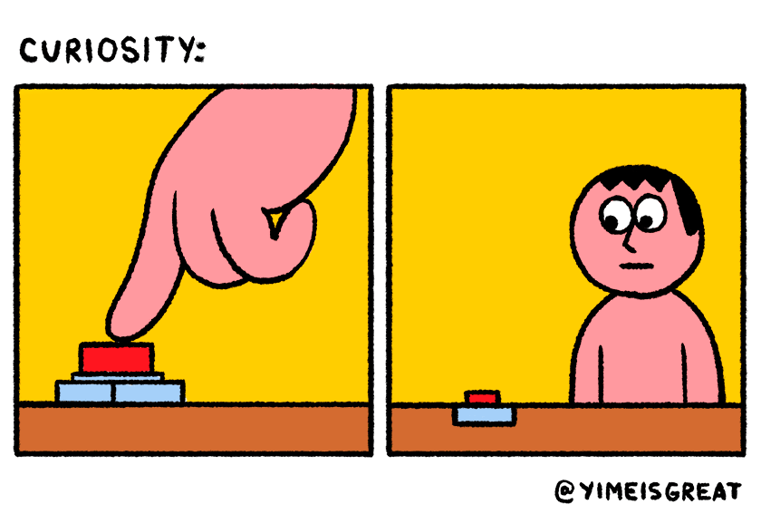

Формати графічних файлів
Формат PNG-8
PNG-8 (Portable Network Graphics) растровий формат збереження графічної
інформації, що використовує стиснення без втрат.
Особливості:
- використовує 8-бітну палітру (256 кольорів) в зображенні. При цьому можна вибирати, скільки кольорів буде зберігатися у файлі – від 2 до 256;
не відображає анімацію на відміну від GIF.
- Область застосування: текст, логотипи, ілюстрації з чіткими межами.
Формат PNG-24
PNG-24 – формат, аналогічний PNG-8, але використовує 24-бітну кольорову палітру.
Особливості:
- використовує приблизно 16,7 млн. кольорів у файлі;
- підтримує багаторівневу прозорість, що дозволяє створювати плавний перехід від прозорої області зображення до кольорової;
- найбільший об’єм файлу у порівнянні з іншими форматами.
- Область застосування: фотографії, малюнки, що містять прозорі і напівпрозорі ділянки, малюнки з великою кількістю кольорів і чіткими межами зображення.
Формат JPEG
JPEG (Joint Photographic Experts Group) – популярний формат графічних файлів, який широко застосовується при створенні сайтів і для збереження фотографій. JPEG підтримує 24-бітний колір і зберігає яскравість і відтінки кольорів в фотографіях
незмінними. Даний формат використовує стиснення з втратами. Метод стиснення може внести спотворення в зображення (особливо зображення, які містять текст, дрібні деталі або чіткі межі). Формат JPEG не підтримує прозорість.
Особливості:
- кількість кольорів в зображенні - приблизно 16,7 млн., що дозволяє зберігати якість зображення;
- основна характеристика формату "якість" - дозволяє керувати кінцевим розміром файлу. Якість змінюється від 1 до 100. Чим більше значення, тим краща картинка, але більший розмір файлу;
- підтримує технологію, яка версію зображення з малою роздільною здатністю відображає в у вікні перегляду до повного завантаження самого зображення.
- Область застосування: використовується переважно для фотографій, не дуже підходить для малюнків, що містять прозорі ділянки, дрібні деталі або текст.

Формат GIF
GIF (Graphics Interchange Format) — формат, який широко застосовується при створенні анімованих зображень. GIF використовує 8-бітний колір і ефективно стискає суцільні кольорові ділянки, зберігаючи при цьому деталі зображення.
Особливості:
- кількість кольорів в зображенні від 2 до 256, але це можуть кольори з 24-бітної палітри. Файл у форматі GIF може містити прозорі ділянки;
-
підтримує покадрову зміну зображення, що дозволяє створювати просту анімацію;
використовує вільний від втрат метод стиснення.
- Область застосування: текст, логотипи, ілюстрації з чіткими межами, анімовані малюнки, зображення з прозорими ділянками, банери.

Формат SVG
SVG (Scalable Vector Graphics) — векторний формат, зображення в якому складається не з пікселів, а з об’єктів і кривих. Тому не підходить для растрових фотографій, які складаються з точок, але дуже підходить для ілюстрацій, що містять чіткі
контури.
Особливості:
- зображення у форматі SVG можна як завгодно багато масштабувати без втрати якості;
- об’єм файлу, як правило, невеликий;
- підтримує анімацію та інтерактивність.
- Область застосування: текст, логотипи, ілюстрації з чіткими межами.

Марковані списки
Особливості таблиць:
- розміри таблиці спочатку не встановлені і обчислюються на основі вмісту комірок (загальна ширина визначається автоматично, виходячи з сумарної ширини вмісту комірок);
- максимальна ширина таблиці – це, як правило, весь доступний простір за шириною;
- вміст комірок за замовчуванням вирівнюється по центру вертикалі. Якщо вміст комірок різний, то в одній комірці знизу і зверху з’явиться пустий простір.
Гіперпосилання використовують у трьох випадках:
- гіперпосилання з якорем для навігації в межах однієї сторінки;
- відносні адреси, як правило, для навігації в межах одного сайту;
- абсолютні адреси, як правило, для переходу на інший сайт.
Нумерований список
Структура таблиці в HTML (така ієрархія обов’язкова!):
- відкрити <table>
- додати рядки з допомогою <tr>
- додати звичайні комірки через <td> або комірки заголовків через <th>. Кількість комірок (тобто елементів <td> і <th>) повинна бути однакова в кожному рядку таблиці, тобто всередині кожного тегу <tr>;
- закрити <table>.
Списки визначень
- HTML
- (HyperText Markup Language – Мова розмітки гіпертексту) – стандартна мова розмітки документів у WWW; система верстки, яка визначає, як і які елементи повинні розміщатися на веб-сторінці. HTML є похідною мовою від SGML, успадкувавши від неї
визначення типу документу та ідеологію структурної розмітки тексту.
Тег
- це елемент мови розмітки гіпертексту, в основному для задання того, як буде відображатися текст (сторінка).